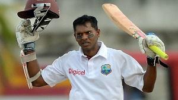

"I faced some of the greatest bowlers of all-time but Wasim Akram was the best" : Shiv Chanderpaul

Blessed with amazing talent and armed with an extraordinary batting stance, Shivnarine Chanderpaul debuted in 1994 and served the West Indies for 21 years playing a total of 454 international games. By the time he played his last international game in 2015, he had amassed 20998 runs and was the 7th highest-ever run scorer in the long form of the game and behind only Brian Lara for his country.
In an interview, the 43-year-old Shivnarine Chanderpaul spoke about the special moments of his illustrious career, his views on the the current crop of West Indies Test players, the constant controversies surrounding the Cricket West Indies, why he rates Wasim Akram as the best bowler he has faced, and his plans for the future.
Read more at http://www.pakpassion.net/component/exclusives/item/1195.html#82JA2Eu9IUPUb33d.99
Copyright CricSwarm 2017.